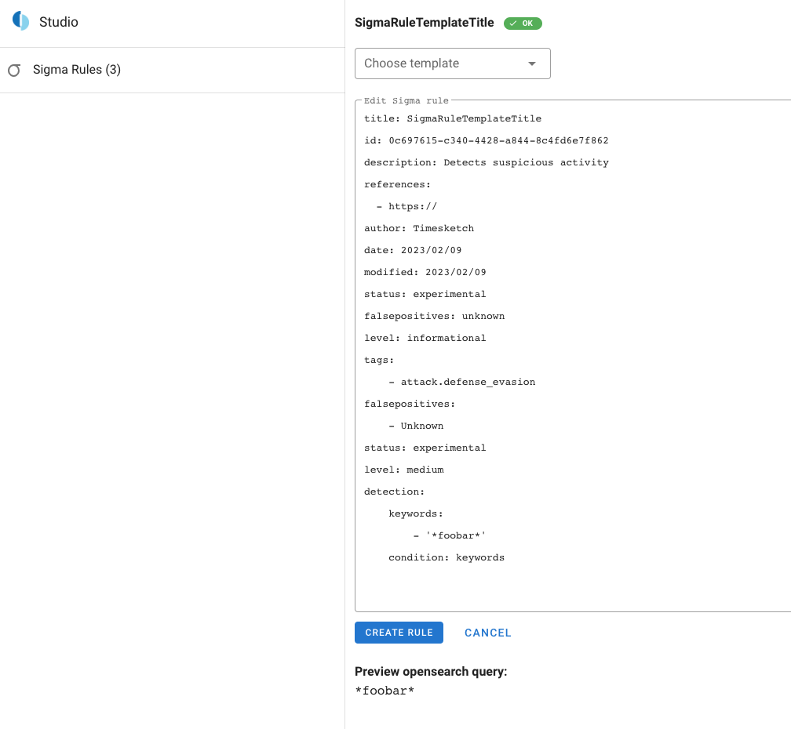

Sigma
What is Sigma
See description at the Sigma Github repository
Sigma in Timesketch
Since early 2020 Timesketch has Sigma support implemented. Sigma can be used as an analyzer. The other option is to use Sigma via the API and the API client or the Web interface.
Sigma in Timesketch should still be considered an Alpha version functionality with known performance and functionality issues.
Web Interface
Sigma rules are exposed to the Web Interface as part of a sketch.
To list all Sigma rules, visit :
https://$TIMESKETCH/v2/studio/sigma/new
This will show a list on the left with all Sigma rules installed on a system. You can search for:
- Rule ID
- Title
- Search query
- File Name
- Tag
So if you want to search for ZMap related rules, you can search for zma and it will show you the pre installed rule.

Analyzer
The Sigma Analyzer will only take rules that have the status: stable. Experimental, Deprecated or similar marked rules are not picked up by the Analyzer.
Hits
If you have run the Sigma Analyzer on a sketch and a rule has produced hits, the following fields will be added to the event:
ts_sigma_rulewill store the rule title that produced hits on an event.ts_ttpif a rule had ATT&CK(r) tags added, they will be added to this array
To query all rules that had Sigma rules matched in an analyzer run, query for:
ts_sigma_rule:*.
E.g. an event might have the following attributes:
ts_sigma_rule:[ "Suspicious Installation of ZMap" ]
ts_ttp:[ "attack.discovery", "attack.t1046"]
Search Query
From that table, there are small icons to copy the values or explore the sketch with the given value. For example if you click the small lens icon next to the Search Query from the found rule (data_type:("shell\:zsh\:history" OR "bash\:history\:command" OR "apt\:history\:line" OR "selinux\:line") AND "*apt\-get\ install\ zmap*") it will open an explore view for this sketch with this query pre filled for you to explore the data.
Install rules
Timesketch deliberately does not provide a set of Sigma rules, as those would add complexity to maintain. To use the official community rules you can visit github.com/Neo23x0/sigma and copy the rules you are interested in.
Web
In the past, Sigma rules where stored on disk, in 2022 this has been changed and Sigma rules are stored in the database. New rules can be added / modified via the Sigma portion of the Studio.
Visit
https://$TIMESKETCH/v2/studio/sigma/new

There are some best practices to compose new Sigma rules.
tscl
Sigma rules can also be added by the admin-cli.
tsctl import-sigma-rules sigma/rules/cloud/gcp/
Importing: Google Cloud Kubernetes RoleBinding
Importing: Google Cloud Storage Buckets Modified or Deleted
Importing: Google Cloud VPN Tunnel Modified or Deleted
Importing: Google Cloud Re-identifies Sensitive Information
...
Limitations
It is not recommended to simply add all Sigma rules from e.g. github.com/Neo23x0/sigma.
- Rules might have missing field mappings (see below) which will cause to broad queries
- Rules might have to many
OR&ANDcombinations that result in very compley OpenSearch queries. On a large index, such queries can cause Timeouts that can lead to stability problems of your Timesketch instance - To many rules marked as Stable could result in Sigma Analyzers running for hours or days, blocking other Analyzers
Timesketch config file
There are multiple sigma related config variables in timesketch.conf.
# Sigma Settings
SIGMA_CONFIG = '/etc/timesketch/sigma_config.yaml'
SIGMA_TAG_DELAY = 5
SIGMA_TAG_DELAYcan be used to throttle the Sigma analyzer. If Timesketch is running on a less powerful machine (or docker-dev) a sleep timer of 15 seconds will help avoid OpenSearch Search exceptions for to many requests to the ES backend in a to short timerange. For more powerful Timesketch installations, this value can be set to 0.
Sigma config
In the config file
sigma_config.yaml
There is a section with mappings, most mappings where copied from HELK configuration. If you find a mapping missing, feel free to add and create a PR.
Field Mapping
The field mappings are used to translate the generalised term from Sigma into the expected field names in Timesketch. Most of the field names in Timesketch are mapped to the expected output names of Plaso.
Some adjustments verified:
- s/EventID/event_identifier
- s/Source/source_name
There are many entries in https://github.com/google/timesketch/blob/master/data/sigma_config.yaml mapped to xml_string. This is because a lot of data in Windows EVTX XML is not valid XML and will be represented in the section xml_string (see https://github.com/log2timeline/plaso/issues/442).
Field mappings like:
TargetFilename:
product=linux: filename
default: xml_string
Are interpreted depending on the selected product in the rule. If the product in the rule is linux the Selector TargetFilename in a rule would be translated to filename:"foobar". If the product is anything else, e.g. Windows it would be xml_string:"foobar"
Test data
If you want to test that feature, get some evtx files from the following links and parse it via plaso
- github.com/sbousseaden/EVTX-ATTACK-SAMPLES
- github.com/sans-blue-team/DeepBlueCLI/evtx
- github.com/jaegeral/timesketch-test-data
Compose new rules
In the Sigma Tab in a sketch there is a toggle called Compose Sigma rule.
If turned on it will show a text area that takes the yaml text of a Sigma rule.
Once you are happy with your rule, click Parse and the rule will be parsed as if it is installed on Timesketch.
Press Save to store it in the database.
This feature can be helpful if you want to test out field mapping.
From the parse result you can copy the search_query value and paste it in a new window where you have the explore of a Sketch open.
Best practices
When writing Rules specific for Timesketch first and foremost you should the guide from one of the creators of Sigma: How to Write Sigma Rules.
Date format
When setting the date field in your rule, stick to YYYY/MM/DD.
Number of or
On top of that, it is recommended to avoid a large chain or or checks.
detection:
keywords:
- 'value1'
- 'value2'
- 'value3'
...
- 'value20'
condition: keywords
such a query would look like:
*value1* or *value2* or *value3* ... or *value20* because that results in a very expensive / long query to execute on the dataset.
Instead it is recommended to splice it into multiple rules:
Rule 1:
detection:
keywords:
- 'value1'
- 'value2'
- 'value3'
...
- 'value10'
condition: keywords
and
Rule 2:
detection:
keywords:
- 'value11'
- 'value12'
- 'value13'
...
- 'value20'
condition: keywords
That will create two queries:
*value1* or *value2* or *value3* ... or *value10* and *value11* or *value12* or *value13* ... or *value20*.
The Sigma analyzer is designed to batch and throttle execution of queries which is beneficial for such rule structure.
Reduce the haystack
If you can, define the haystack OpenSearch has to query. This can be achieved by adding a check for data_type:"foosource".
Troubleshooting
How to find issues
Logs
In the celery logs, while running the sigma analyzer, you will see something like that:
result: Applied 0 tags
* win_apt_carbonpaper_turla.yml: 0
...
* win_syskey_registry_access.yml: 0
Problematic rules:
XXXX
The XXX here is the "problem" and you should note those rules. Once you note and identified those rules, it is recommended to take the id and attempt a API call like the following:
from timesketch_api_client import config
ts = config.get_client()
rule = ts.get_sigma_rule("c0478ead-5336-46c2-bd5e-b4c84bc3a36e")
print(rule.search_query)
Where the ID is the id of your problematic rule. This will hopefully give you more insight from the web server logs of what caused the problem. E.g. "Aggregations not implemented for this backend" It is then recommended to move those rules to a separate folder, maybe even creating a small shell script that does that for you once you pull upstream rules from the Sigma repository.
How to verify issues
Timesketch API / logs
If you have doubt if a rule does work, take the uuid and run python code mentioned above.
sigmac
Another option is to run the rule against the official sigma client with the Timesketch sigma mapping file.
For our example from above:
sigma/tools/sigma$ python3 sigmac.py -t es-qs --config ../../../sigma_config.yaml ../../rules/windows/image_load/sysmon_mimikatz_inmemory_detection.yml
An unsupported feature is required for this Sigma rule (../../rules/windows/image_load/sysmon_mimikatz_inmemory_detection.yml): Aggregations not implemented for this backend
Feel free to contribute for fun and fame, this is open source :) -> https://github.com/Neo23x0/sigma
What to do with problematic rules
Update the status of the rule to deprecated.
If the rules do not contain any sensitive content, you could also open an issue in the timesketch project and or in the upstream sigma project and explain your issue (best case: provide your timesketch sigma config and the rule file so it can be verified).